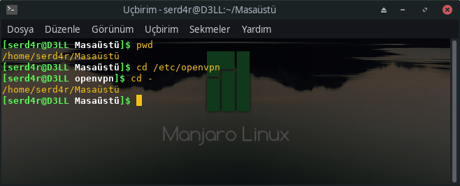
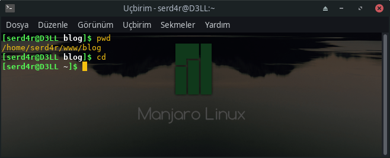
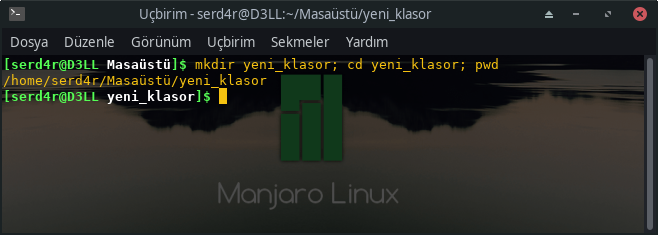
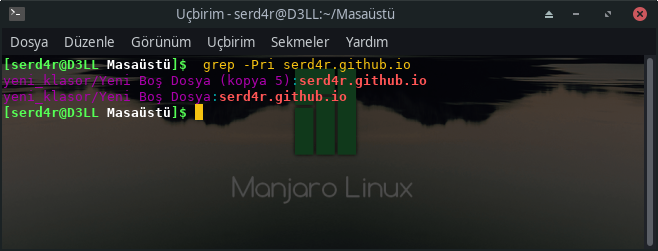
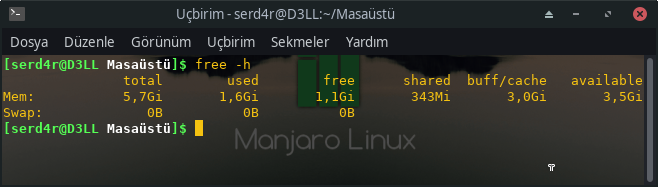
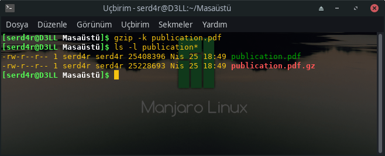
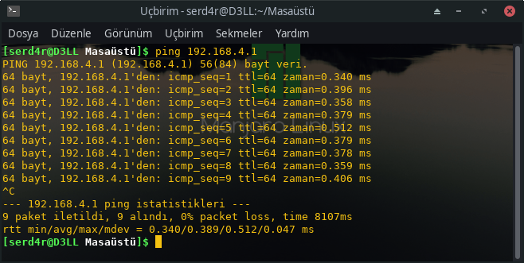
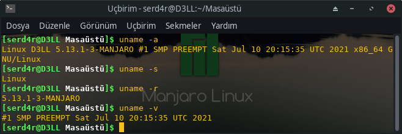

Basit Linux Komutlari
Önceki Dizine Geri Dön
Uzun bir dizin yoluna girdiniz ve oradan da farklı bir dizine derken birden önceki dizin yoluna gitmeniz gerektiğini farkettiniz.Bu komutu girin ve önceki dizine atlayın.
|
|
Bu sizi önceki dizine geri atacaktır böylelikle artık uzun dizin yolunu yazmak ya da kopyala yapıştır gibi yapmanıza gerek yok. 
Ana Dizine Geri Dön
Oldukça açık…Linux ana dizinden uzakta bir yerdesiniz ve ana dizine gitmeniz gerekiyor.Terminale sadece şunları yazın.
|
|
ya da sadece cd yazın aynı işlevi görecektir.
|
|

Tek Satırda Birden Çok Komut Çalıştır
Komut aralarına noktalı virgül koyarak sırayla birden fazla komut çalıştırabilir.Önceki komutları beklemeye gerek yok.
|
|

Yalnızca Önceki Komut Başarılıysa, Tek Satırda Birden Çok Komut Çalıştır
Önceki komutta, zamandan tasarruf etmek için birkaç komutu tek bir satırda çalıştırdık.Ama ya komutların başarısız olmadığından emin olmanız gerekiyorsa?
|
|
Buna örnek vermek gerekirse sistem güncellemelerinde kullanılan “sudo apt update && sudo apt upgrade” komutudur.
Terminalde Kopyala Yapıştır.
▪ Kopyalanacak metni seçin ve yapıştırmak için sağ tıklayın (Putty ve diğer Windows SSH istemcilerinde çalışır)
▪ Kopyalanacak metni seçin ve yapıştırmak için orta tıklayın (faredeki kaydırma düğmesi)
▪ Ctrl+Shift+C for copy and Ctrl+Shift+V for paste
Belirli Bir Metni İçeren Dosyalar Olup Olmadığını Bulun
Linux komut satırında aramanın ve bulmanın birden çok yolu vardır. Ancak, belirli bir metni içeren dosyalar olup olmadığını görmek istediğinizde şu komutu kullanabilirsiniz:
|
|

eğer sadece belli uzantıya sahip dosyaları aratacaksanız örneğin .txt uzantılı dosyalarda arama yapacaksanız;
|
|
“aranan” kelimesini bütün txt uzantılı dosyalarda arayacaktır.
Herşeyi Terse Çevir
Kendisine verilen her dizeyi tersine çevirir.
|
|
Bilgisayardaki Bellek Miktarını Gör
|
|

gzip
gzip komutu dosyaları sıkıştırır. Varsayılan olarak, orijinal dosyayı kaldırır ve sizi sıkıştırılmış sürümle baş başa bırakır. Hem orjinal hem de sıkıştırılmış sürümü korumak için -k (sakla) seçeneğini kullanın.

ping
Ping komutu, başka bir ağ aygıtıyla ağ bağlantınız olduğunu doğrulamanızı sağlar. Ağ sorunlarının giderilmesine yardımcı olmak için yaygın olarak kullanılır. Ping kullanmak için diğer aygıtın IP adresini veya makine adını girin.
|
|
Ping komutu, siz onu Ctrl+C ile durdurana kadar çalışacaktır.

Burada neler oluyor:
▪ 192.168.4.1 IP adresindeki cihaz, ping taleplerimize yanıt veriyor ve 64 baytlık paketleri geri gönderiyor.
▪ İnternet Kontrol Mesajlaşma Protokolü (ICMP) sıra numaralandırması, cevapsız yanıtları (bırakılan paketler) kontrol etmemizi sağlar.
▪ TTL, bir paket için “yaşama zamanı"dır. Paket bir yönlendiriciden her geçtiğinde, (olması gereken) bir azaltılır. Sıfıra ulaşırsa paket atılır. Bunun amacı, ağ geri döngü sorunlarının ağa taşmasını önlemektir.
▪ Zaman değeri, bilgisayarınızdan cihaza gidiş-dönüş yolculuğunun süresidir. Basitçe söylemek gerekirse, bu sefer ne kadar düşük olursa o kadar iyi.
Ping’in belirli sayıda çalışması için çalışması için -c(count) seçeneğini kullanın.
|
|
uname - Sistem Bilgilerini Görün
uname komutu ile üzerinde çalıştığınız bilgisayar ile ilgili bazı sistem bilgilerine ulaşabilirsiniz.
▪ Her şeyi görmek için -a (all) seçeneğini kullanın.
▪ Çekirdek türünü görmek için -s (kernel name) seçeneğini kullanın.
▪ Çekirdek sürümünü görmek için -r (kernel release) seçeneğini kullanın.
▪ Çekirdek sürümünü görmek için -v (kernel version) seçeneğini kullanın.

pwd - Çalışılan Dizini Göster
Çalıştığınız dizini görmenin yolu pwd komutudur.Geçerli çalışma dizini yolunu görüntüler ve dizin değişiklikleri sıklıkla yapıldığında kullanışlıdır.
|
|
mv – Dosyayı Taşı
Bir dosyayı taşımak veya bir dosyayı yeniden adlandırmak için mv komutunu kullanırsınız.
Burada dosya adı birinci.txt’den ikinci.txt’ye değiştirilir.
|
|
cp – Dosyayı Kopyala
|
|
Bulunulan dizindeki bütün sql uzantılı dosyaları db klasörüne kopyalar.
rm - Sil
Bu komut, bir dizindeki veya dizinin kendisindeki dosyaları kaldırmak için kullanılır. Bir dizin boş değilse kaldırılamaz.
rm [dosyanın adı]
rm –r, bir dizindeki ve dizindeki tüm içeriği kaldırır.
|
|
mkdir – Dizin Oluşturmak İçin
mkdir [dizin adı] ‘proje’ türünde bir dizin oluşturmak istiyorsanız:
|
|
Off çok uykum geldi 😴 aklıma geldikçe güncellerim. 💤💤💤